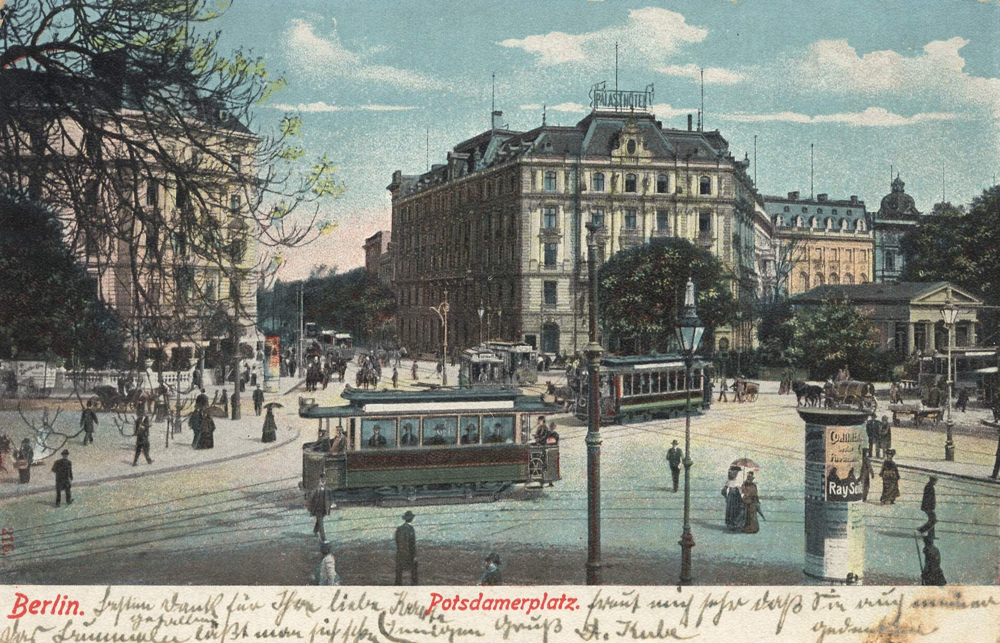

Optima Academy Online
An Education Experience Company
SOCIOLOGY
Quarter / Module
Q2 · Module 13
Urbanization, Technology, and Social Relationships
Item
Text Study 13A
Author
Georg Simmel
Published
1903
TEXT STUDY 13A
Individuality, Freedom, and Objective Culture
Simmel, Die Großstädte und das Geistesleben (The Metropolis and Mental Life) (1903), concluding sections
💡 CONTEXT
Simmel gave this essay as a lecture and printed it in 1903, when Berlin, where he lived and taught, had become one of the great industrial capitals of Europe. Its opening half (Text Study 4B) explains the guarded city mind: overstimulation produces the blasé attitude, a protective reserve, and the money economy trains people to calculate. The concluding half turns from defence to freedom. It asks what the same conditions do to individuality, places the answer inside the history of two competing ideals of the individual, and ends by declining to issue a verdict on the city.
📊 THE ARGUMENT AT A GLANCE
TWO IDEALS OF THE INDIVIDUAL, ONE ARENA
18TH CENTURY · INDEPENDENCEBreak the inherited bonds of estate, guild, land, and church. Freed, every person shows the same human nature. Value = what all share.
19TH CENTURY · UNIQUENESSFreed persons now seek to differ. Goethe, the Romantics, and the division of labour. Value = what no one else can supply.
↓
WHAT THE CITY SUPPLIESSize and anonymity loosen every small-circle tie. Specialization rewards being hard to replace.
+
WHAT THE CITY THREATENSObjective culture (law, technique, buildings, institutions) outgrows what any one person can absorb.
↓
THE METROPOLISWhere both ideals meet, conflict, and seek reconciliation. Result: exaggerated distinctiveness, and a stance of understanding rather than verdict.
The same conditions free the individual and endanger the individual’s inner culture.
📖 THE ARGUMENT, SECTION BY SECTION
1
Freedom means expressed particularity
CLAIMA person, like a city, extends as far as the effects he produces, not merely as far as his body or his street. Urban freedom is therefore more than release from restriction.
REASONNegative freedom (moving where one likes, escaping small-town prejudice and narrowness) is only the start. Positive freedom is the actual expression of what is particular in a person. That expression becomes visible, to the person and to others, only where it differs from everyone else’s. Being impossible to replace is the evidence that a life is lived from within and not imposed from outside.
ILLUSTRATIONA craftsman in a village and the same craftsman in a capital may make identical work, but only in the capital is there a large enough field of comparison for his particular skill to register as his. (Optima example, not Simmel’s.)
2
The city as the seat of the division of labour
CLAIMThe metropolis carries specialization further than any other setting.
REASONA large population can absorb a very wide variety of services. Crowding and competition for customers then push each person toward a narrow function in which a rival cannot easily displace him. In the city, the struggle with nature for a living becomes a struggle with other people, and the reward is granted by people, not by nature.
EXAMPLESimmel’s own case: in Paris, a few people earned a living as a standby fourteenth dinner guest, dressed and ready to be summoned whenever a host found thirteen at the table.
3
The bid for notice
CLAIMThe city produces a sharper, narrower individuality, and often an exaggerated one.
REASONSellers must keep inventing new wants in their customers, which differentiates the public itself. A person also struggles to win any standing among millions. Where more of the same no longer distinguishes anyone, people turn to differences of kind: odd manners, caprice, studied fastidiousness, whose point is to be different and so to be noticed. Encounters are brief and rare compared with small-town life, where long acquaintance gives each person a settled picture of the other, so each meeting pressures people to appear sharp and distinctive at once.
ILLUSTRATIONA first impression must do in a minute what a village reputation does over years. (Optima example, not Simmel’s.)

4
Objective culture outgrows the individual
CLAIMThis is the deepest reason the city pushes toward extreme individuality. Modern culture is marked by the dominance of objective culture over subjective culture.
REASONObjective culture is the mind (Geist) stored in things: language, law, techniques of production, art, science, household objects, institutions. Subjective culture is what an individual has actually made his own. Over the nineteenth century the first grew enormously, while the second lagged and in refinement and idealism even declined. The cause is the division of labour: it demands ever more one-sided performance, so the whole personality is neglected and the individual shrinks to a small part of a vast apparatus.
EXAMPLEThe metropolis is where this culture is concentrated: its buildings, schools, space-shrinking transport, and state institutions. Life there becomes easier, carried along by ready-made stimulation, yet emptier of anything personal. To rescue the personal at all, people must exaggerate their peculiarities until even they themselves can notice them.
5
Two individualisms, two centuries
CLAIMThe city nourishes two different ideals of the individual, and their historical sequence gives the city its significance.
REASONThe eighteenth century found persons bound by political, agrarian, guild, and religious ties that had lost their sense and enforced an unjust inequality. It answered with freedom and equality: remove the bonds, and the same human essence would appear in everyone. The nineteenth century, drawing on Goethe and the Romantics and on the economic division of labour, asked freed individuals to become unlike one another. A person’s worth now lay in being irreplaceable, not in sharing a common humanity. The tension between the two ideals shapes the history of the age, outwardly and inwardly.
EXAMPLEThe followers of Nietzsche show the tension in one figure. They despise the city because objective culture there swamps the individual, yet city dwellers admire them most, because they voice the hunger for distinction that the city leaves unsatisfied.
6
The arena, and the stance toward it
CLAIMThe metropolis is the place where the two ideals fight and attempt reconciliation, and it is a historical formation to be understood, not tried.
REASONIts conditions provoke both ideals at once, so opposed currents run through it with equal claim to legitimacy. A formation of that scale, of which each person is a small and passing part, lies beyond the role of a judge. The sociologist neither prosecutes the city nor apologizes for it; the task is to grasp what it does and why.
⚖️ THE DISTINCTIONS THAT CARRY THE ARGUMENT
NEGATIVE / POSITIVE FREEDOMRelease from ties and prejudice, versus the actual expression of what is particular in a person.
EQUALITY / UNIQUENESSWorth as shared human nature (eighteenth century), versus worth as irreplaceability (nineteenth century).
OBJECTIVE / SUBJECTIVE CULTURECulture stored in things and institutions, versus culture a person has absorbed and made his own.
QUANTITY / QUALITYDistinction by more of the same, versus distinction by being of a different kind.
UNDERSTAND / JUDGEExplaining a historical formation, versus condemning or excusing it.
❓ THE STRONGEST OBJECTION
The closing stance is not as neutral as it claims. Simmel has just described a decline in individual culture and a person reduced to a part of an apparatus. Those are evaluative descriptions; calling a change a decline already judges it. If description cannot be cleanly separated from verdict, then refusing to judge the city may simply hide a judgment rather than avoid one.
A second objection targets the causal story. Simmel blames the gap between objective and subjective culture on the division of labour, yet locates it in the metropolis. If specialization is the cause, any advanced economy should produce the gap, city or not, and the essay’s focus on the city needs further defence.
🎯 FOUR QUESTIONS
- Simmel describes a tension between individual freedom and individual distinctiveness in the modern city. What is this tension? How does the very size and anonymity of the city both liberate individuals and pressure them toward extreme differentiation?
- The essay ends by asking whether the modern city is a source of human freedom or imprisonment, and then declines to judge. How would you answer the question, drawing on both Simmel and Durkheim?
- Simmel argues that objective culture, the accumulated body of institutions, technology, and inherited knowledge, grows far faster than any individual’s subjective culture can keep pace with. Is that gap a cost of specialization itself, or specifically of metropolitan life? Could a small, technologically advanced town produce the same effect?
- The fiercest critics of the metropolis, followers of Nietzsche, are also the figures city dwellers admire most. Why might the same social conditions produce both the sharpest hostility toward a place and the deepest devotion to it, in the same kind of person?
✏️ AFTER THE QUESTIONS
▶ Question 2: free or imprisoned?
Simmel refuses the question as posed. He says neither that the city liberates nor that it imprisons. Both forces belong to the whole of historical life, and the sociologist’s task toward them is to understand, not to accuse or acquit. That is a methodological answer rather than a verdict: judging the city is not sociology’s job; describing accurately what it does to a person is. That division of labour between description and judgment is open to challenge. Durkheim’s claim that punishment maintains social cohesion is a good test case: a neutral description, or already an endorsement?
▶ Question 4: the Nietzsche paradox
One reading: the same overgrowth of objective culture that flattens the individual also makes fierce individuality visible and valuable. Someone who could stand out effortlessly in a village has nothing to push against; someone struggling against a metropolis that reduces her to a small part of a machine has a worthy opponent, and worthy opposition is exactly what an admirer of Nietzsche wants. On this reading the city is loved not despite being an antagonist but because it is one. Whether that explains real devotion to real cities, or imposes a tidy pattern after the fact, is worth pressing.
➡️ NEXT
1
Lesson 13.02
2
Text Study 13B
Optima Academy Online · SOCIOLOGY · Quarter 2 · Text Study
Simmel, Die Großstädte und das Geistesleben (1903)
© Optima Academy Online · An Education Experience Company